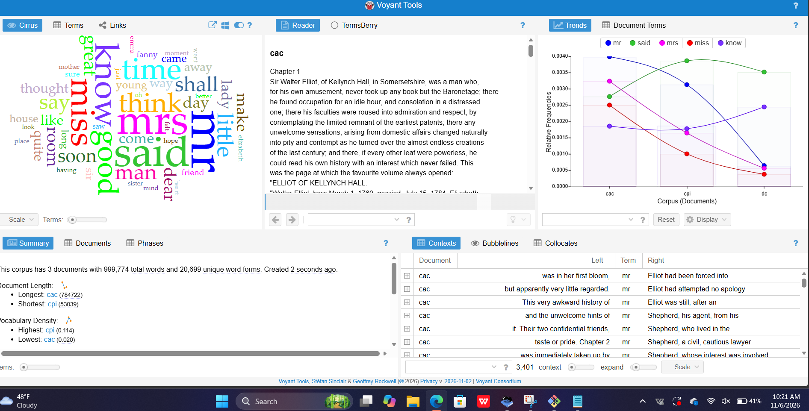
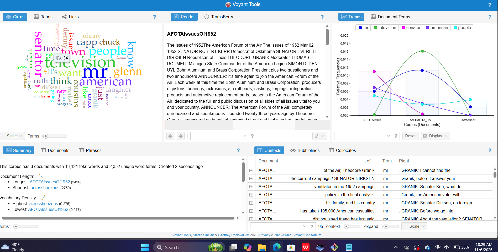

How does language in literary fiction different from language in radio discussions from the 1950s?
For this project, I compared three literary fiction texts with three radio discussion transcripts. I used AntConc and Voyant Tools to examine word frequencies, repeated phrases, and language patterns.
For my AntConc analysis, I compared three literary fiction texts with three radio discussion transcripts. I noticed that the literary fiction texts used phrases like "I did not know what to" and "I am sure I do not," which show how characters express their thoughts and feelings.
In the radio discussions, I noticed repeated phrases like "the American Forum of the Air" and "America's Town Meeting." I also found words like "I," "you," and "we" appearing frequently. This suggests that radio discussions use more direct and conversational language, while literary fiction focuses more on storytelling and characters.
Voyant Tools was used to compare word frequencies and vocabulary patterns in literary fiction and radio discussions.


After comparing these two types of texts, I noticed that literary fiction and radio discussions use language differently. Literary fiction focuses more on storytelling, characters, and describing what is happening. Radio discussions use more direct language because people are speaking to each other and sharing their opinions. Using AntConc and Voyant Tools helped me see these differences through repeated words and phrases. Overall, I learned that the way people use language depends on the purpose of the text and the audience.